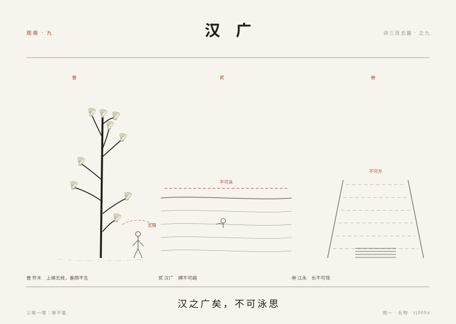
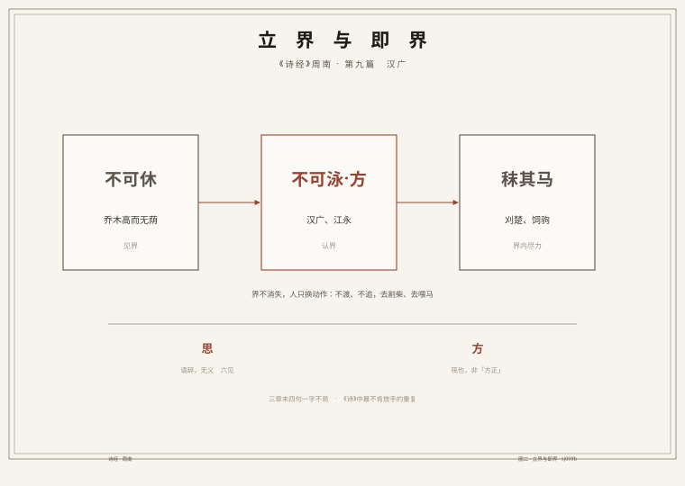

第九篇 汉广
周南 · 之九 SJ009
一 解题
诗三判：
- 谁在说：江边一个刈薪的人。他说「言刈其楚」，说的是割柴；说「言秣其马」，说的是喂马。两句话都是劳作语，不是贵族的口气。
- 说什么事：三样东西拦着他——乔木不可荫，汉广不可泳，江永不可方。拦完了，他不退，也不进，转头去替那个人喂马。
- 为何编在此：前八篇说婚、说嗣、说族、说用人，说到《芣苢》已落到「无事」的一天。第九篇忽然立起一道界——原来周南不只有「得」与「无事」，还有「明明在眼前，却不可及」。
《毛序》：「《汉广》，德广所及也。文王之道被于南国，美化行乎江汉之域，无思犯礼，求而不可得也。」——把「不可求」读成「被文王之化，故不敢犯礼」。
朱子《诗集传》：「江汉之俗，其女好游，故有游女之诗。」——朱子把「游女」解作「出游之女」，把这首诗从神怪里拉回人间。
本库的看法：这一篇不是「守礼」的道德样板，是「界」的诗。
三喻同指一理：够不着。乔木太高，荫不下来；汉水太宽，泅不过去；江水太长，筏也渡不得。末四句三章一字不易，是把这道界反复钉住——不是忘了，是不肯装作忘了。而它的落点不在「不得」，在「秣马」：既知界在，就只在界内尽力。
二 经文
第一章
南有乔木，不可休思。汉有游女，不可求思。汉之广矣，不可泳思。江之永矣，不可方思。
第二章
翘翘错薪，言刈其楚。之子于归，言秣其马。汉之广矣，不可泳思。江之永矣，不可方思。
第三章
翘翘错薪，言刈其蒌。之子于归，言秣其驹。汉之广矣，不可泳思。江之永矣，不可方思。
分章：毛传、朱子皆三章，章八句。三章末四句完全相同，一字不易——《诗》中极罕见的「全复」。通常的复沓是小变（换一两字），此篇是三章整段照旧，四次「不可」原样砸下。
三 韵读
| 一 |
休、求 |
幽部 |
广、泳、永、方（阳部） |
| 二 |
楚、马 |
鱼部 |
同上一字不易 |
| 三 |
蒌、驹 |
侯部 |
同上一字不易 |
前半三章各换一韵：幽、鱼、侯，都是收拢沉着的部类；后半一律阳部，开口放远。声上是一变一不变——话在变，界不变。三章末四句同字同韵，唱起来是同一句唱三遍：这是《诗》里最不肯放手的重复。
四 字义名物
- 乔木——上竦无枝曰乔（《毛传》「乔，上竦也」）。树身高而枝不上扬垂覆，所以树下无荫。
- 休——荫、止息。「不可休思」是不能在其下歇荫，不是「不能休息」。
- 思——语辞，无义（朱子）。全篇六个「思」皆语辞。
- 游女——出游之女（朱子）。一说汉水神女，见「存疑」。
- 方——筏，此作动词，以筏渡。毛传「方，泭也」。不是「方形」。
- 泳——泅水而行。
- 永——长。
- 翘翘——高出之貌。薪之高出于众者。
- 错薪——错，杂；错薪即杂列之薪。
- 楚——荆，杂薪中之尤翘者。
- 蒌（lóu）——蒌蒿，白蒿之类，亦薪中之翘者。
- 秣——饲马。
- 驹——马之少者，五尺以上为驹。
五 今译
第一章
南边有高树，树下却不能歇荫。汉水有游女，我却不能求。汉水那样宽，泅不过去；江水那样长，筏也渡不得。
第二章
柴草乱堆着，我去割那最好的荆。她就要出嫁了，我替她把马喂饱。汉水那样宽，泅不过去；江水那样长，筏也渡不得。
第三章
柴草乱堆着，我去割那最好的蒌。她就要出嫁了，我替她喂饱小马。汉水那样宽，泅不过去；江水那样长，筏也渡不得。
译注：「不可休思」译作「不能歇荫」而不作「不能休息」，是守毛传「休，息也」的「息」字本指喘息止息、树荫下的歇；一字译错，全篇意象就散。「之子于归」译「她就要出嫁了」，不译「她要回娘家」——此处的「归」是嫁。
六 章旨
一章：立界。乔木之荫、汉之广、江之永——三样都是自然之物，却成了三道人越不过的线。
二章：即界而为。不渡，不追，去割柴、去喂马。界没有消失，只是人换了动作。
三章：再为。马换作驹，事更细一层。这不是发展，是把「只有在界内能做的这件事」做第二遍。
三章之序，是一条极细的线：见界 → 认界 →
在界内尽力。第三层的「驹」尤重——马已饱，驹尚小，他连小的也喂。用力之细，见情之深；而全篇不着一句情语。
七 诗教
- 兴：首二句以乔木起兴，三四句以汉起兴。所兴与所咏之间不是比喻，是同构：树不可荫，人不可求，都是「够不着」。
- 观：可观一「界」。三百篇多写「求而得」「求而不得」，唯此篇写「根本无由求」。这是《诗》里最清醒的一篇。
- 群：它所立的是一个人与另一个人之间的分寸：不越界，也不撤退；不能参与她的婚，却肯替她的马添一把草。
- 怨：有憾而无怨。三章不诉一句苦，重复的末四句就是它的叹息——但叹息里没有怨，只有承认。
八 分寸与边界
- 不可把「游女」读作汉水神女。《列仙传》郑交甫遇江妃二女，是晚出的传说；朱子明言「出游之女」。以神女读《诗》，是把宋人的小说倒灌进周代的歌。
- 不可把「不可求」读成「求之不得」。《关雎》是求而不得，是挫折；此篇是根本无由求，是界限。两者是《诗》的两极，混读则两篇俱失。
- 不可把「方」解作「方形」「方正」。它是筏，是渡水的工具；「不可方」是不能以筏渡，不是「不方正」。
- 不可把「休」解作现代「休息」。「不可休思」是树下无荫可歇，意象全在树上；译成「不能休息」，乔木就成了空话。
- 不可把此篇读成「文王之化，人不犯礼」的道德样板。这是《毛序》的读法，属于汉代经师的政治解释；诗里没有一个字提到「化」，只提到树、水、柴、马。
九 存疑
- 作者：朱子以为「樵者」之辞；今人多以为是江汉一带的民歌。本库取「刈薪者」的口吻，不取作者坐实。
- 游女：一说「出游之女」（朱子），一说「汉水之神女」（《列仙传》系统）。本库从前说，后说存为传说。
- 方之训：毛传「泭也」（筏）；一说「并舟」，一说「桴」。义皆近「渡水之器」，本库取筏。
- 楚、蒌：一说实指荆与蒌蒿，一说只是「翘楚」之喻（薪中最好的）。本库两存：名物取实，读法取喻。
- 秣马是否含送嫁：一说「秣马」是为她出嫁备车马，是参与其婚；一说只是「愿其嫁而善其马」的心愿。本库取后者——他不入场，只添草。
十 跨典
- 《周南·关雎》「求之不得，寤寐思服」——求而不得，是挫折；此篇「不可求思」，是无由求，是界。两篇并读，才见《诗》写「情」的两端。
- 《周南·樛木》「南有樛木，葛藟累之」——同以「南有」起句。樛木下曲，故葛得附；乔木上竦，故人不得荫。一曲一直，一可附一不可即，周南开篇的二木，正好把「可」与「不可」写全。
- 《周南·汝坟》「遵彼汝坟，伐其条枚」——同是江汉之域、同有伐木之劳。彼有「既见君子」之喜，此只有「不可求」之界。
- 《齐风·南山》「析薪如之何？匪斧不克」——以析薪喻婚娶，是《诗》的常语。此篇「错薪」「刈楚」正用此语，故二章一转即到「于归」。
- 《楚辞·九歌·湘君》《湘夫人》——汉水、湘水的水神系统，是后来才成的；以之读《汉广》，是以后释前。
- 《列仙传》郑交甫江妃——「游女」神话之源，晚出，可引为流变，不可为诗义。
十一 双卡与图
双卡五对：
| 乔木（上竦无荫） |
汉广（不可泳） |
| 不可休（荫） |
不可求（界） |
| 错薪·刈楚 |
于归·秣马 |
| 楚（翘） |
蒌（翘） |
| 马 |
驹 |

图一 · 乔木·汉广·江永 名物图

图二 · 立界与即界 义理图
读图三处：
- 乔无垂枝：乔木的枝一律向上，没有一枝下垂。这不是画法取巧，是「不可休」的物证——树荫是垂枝给的，不垂就无荫。
- 汉广是横的：汉水横着铺开，泳者的路线被水面截断；江水纵着远去，筏到中流即失。一横一纵，两种「够不着」。
- 秣马的手：图二第三格只画一只手与一把草，不画人。全篇的情都在这个动作里，画了脸反而说多了。